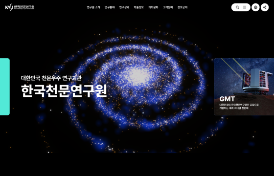
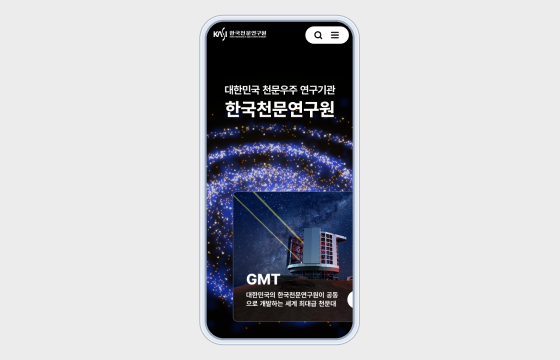
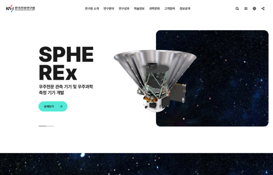
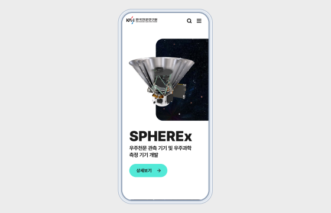

한국천문연구원 디자인시안
디자인 시안 공통 디자인 전략
- KRDS중 Typography, Icon, Colors, Layout 기본 원칙을 적용하여 디자인
- 일반적인 공공기관의 웹사이트 디자인 보다 트렌드 반영을 중시하며 Interaction을 강조하는 디자인
- 한국천문연구원의 분야를 직관적으로 표현하는 디자인 방향
Type-A
나선형은하 모티브로 한국천문연구원을 상징하며 역동적인 모션효과를 적용하여 몰입감있는 우주공간을 표현합니다.

Desktop mode

Mobile mode
Type-B
미니멀한 디자인과 사용자의 스크롤에 반응하는 모션효과를 통해 트렌디한 느낌을 강조.

Desktop mode
